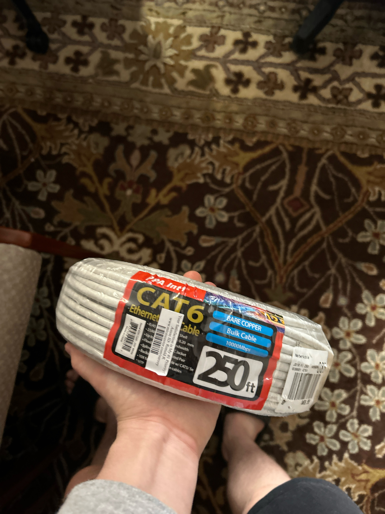
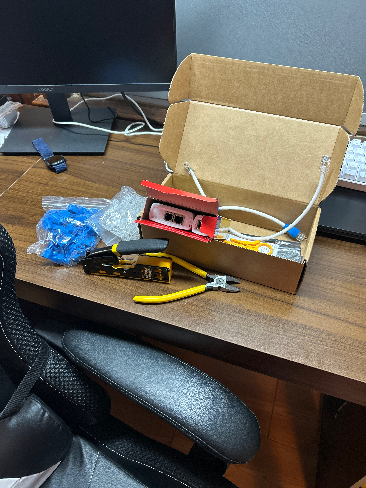
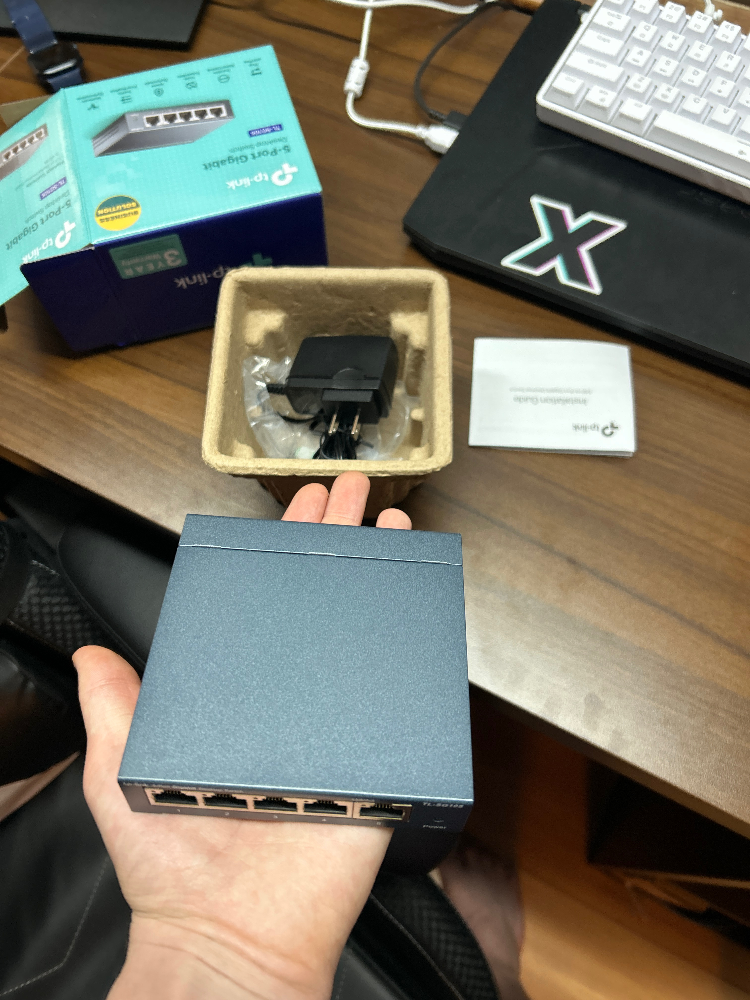
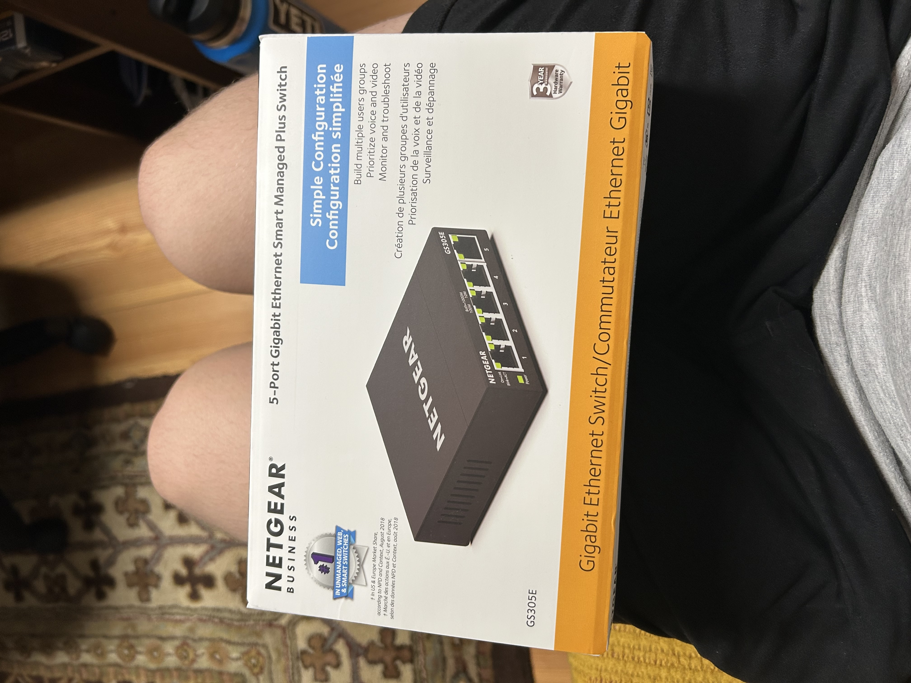
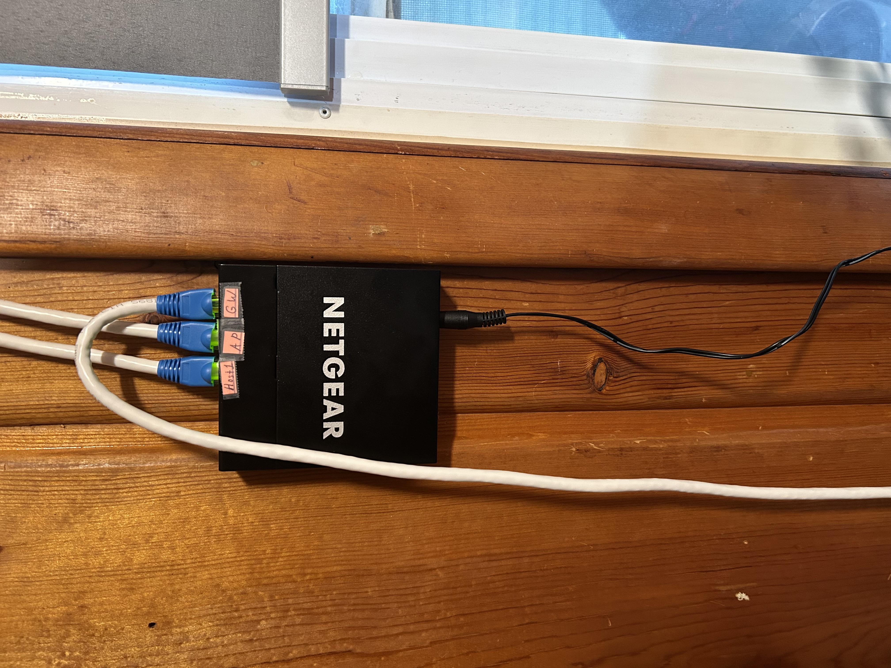
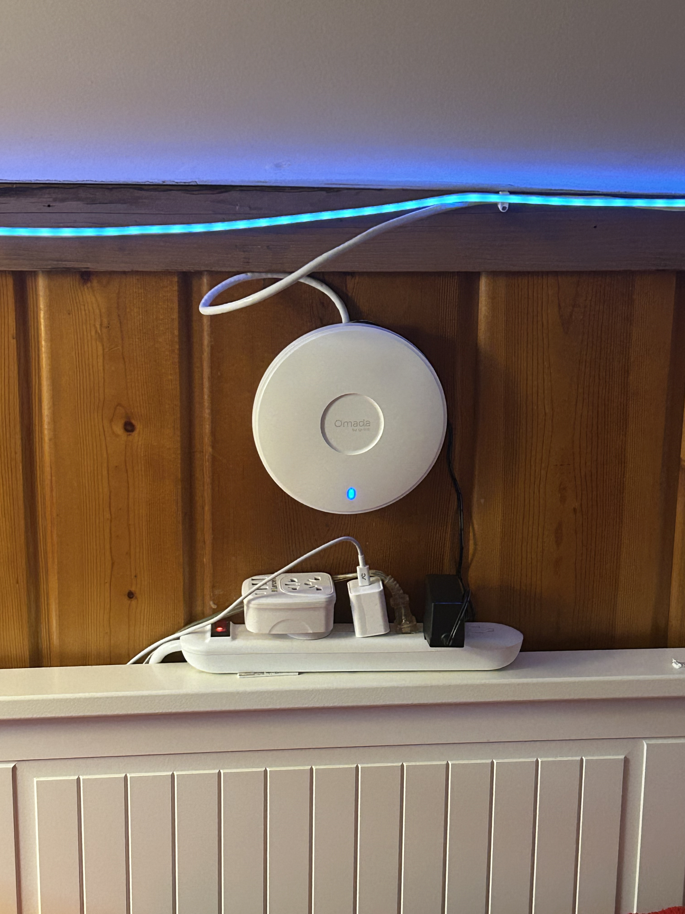
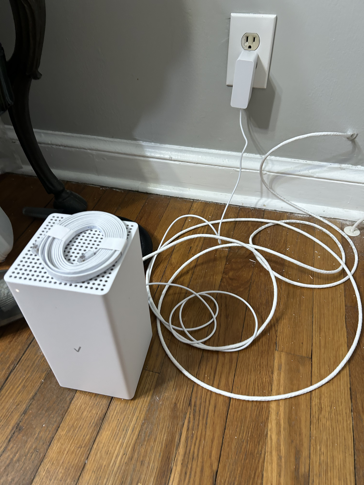
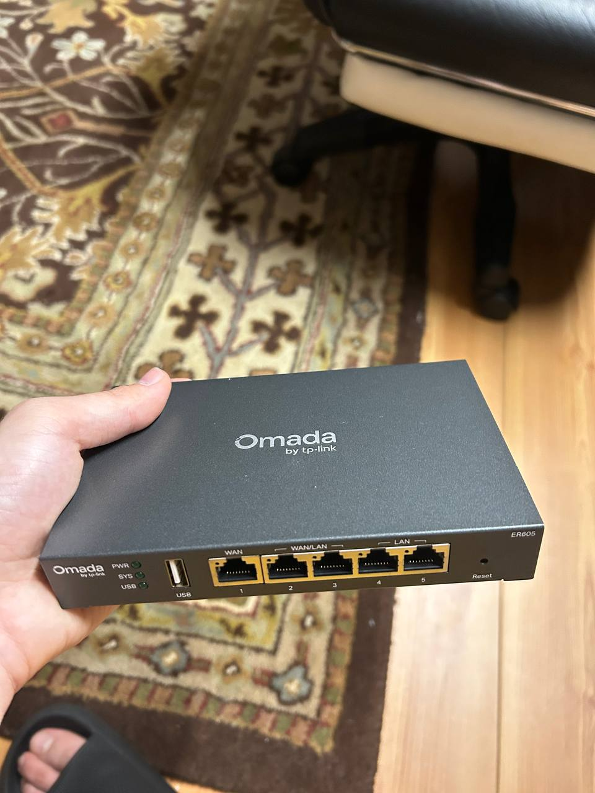

Project Overview
This project involved expanding and improving my home network infrastructure through physical Ethernet cabling and the installation of networking equipment.
The objective was to establish reliable wired connectivity between devices, improve wireless coverage, and gain practical experience working with real networking hardware.
Project Objectives
- Install physical Ethernet cabling throughout the home.
- Establish wired connections between workstations and network equipment.
- Deploy a managed network switch.
- Install and configure a TP-Link Omada wireless access point.
- Document network equipment and configuration.
Ethernet Cabling Installation
Completed workI installed approximately 250 feet of Cat6a Ethernet cable to extend wired network connectivity between different areas of the home.
The work included planning cable routes, handling the physical installation, and preparing Ethernet cable connections using crimping tools.


Physical Cable Installation Walkthrough
A walkthrough from the workstation to the network switch, demonstrating the physical cable route and installation.
Switching and Network Hardware
Completed workThe network infrastructure was expanded with additional switching equipment to provide wired connectivity for connected devices.
The project also involved moving beyond a basic unmanaged switching setup toward managed network equipment.



Wireless Access Point
Completed workA TP-Link Omada wireless access point was deployed to expand wireless network coverage and provide additional flexibility for connected devices.



Planned Network Upgrade
Not yet deployedA new router has been acquired for a future infrastructure upgrade. Installation and configuration are still pending.

Future work: Router deployment, configuration, and integration into the existing home network will be documented after implementation.
Skills and Practical Experience
This project provided practical experience with the physical and logical components of residential network infrastructure.
Technical Skills Demonstrated
- Ethernet cabling installation and cable preparation.
- Physical network infrastructure deployment.
- Network switch installation.
- Managed and unmanaged switching concepts.
- Wireless access point deployment.
- Router administration and network configuration.
- Network troubleshooting and documentation.
The network remains an ongoing personal infrastructure project. Future improvements will be documented as additional equipment is installed and configured.